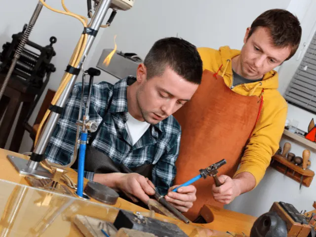
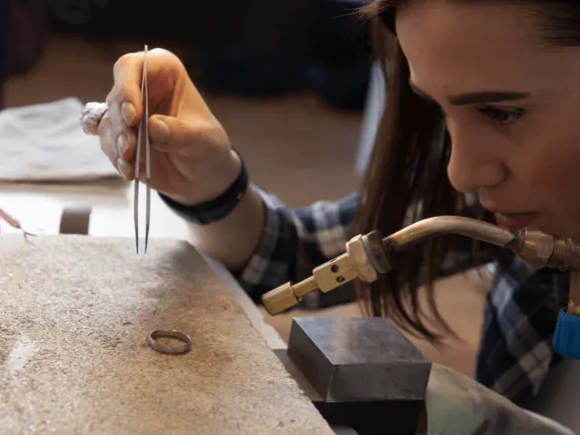
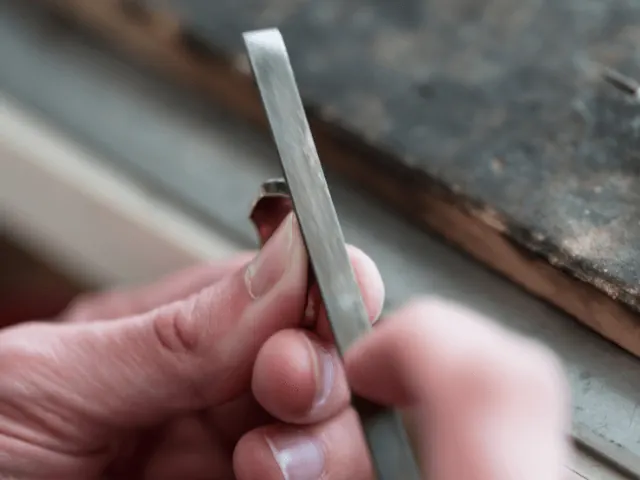
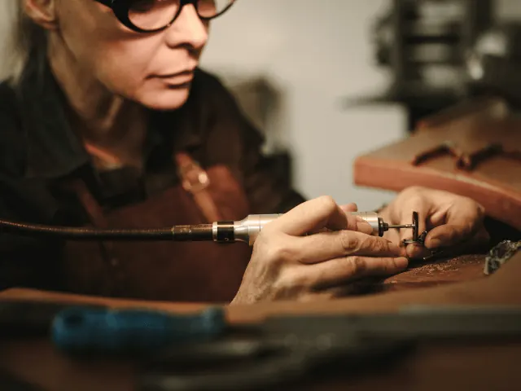

Top 5 Cursussen Edelsmeden in Nijmegen: Vind Jouw Creatieve Spark
Gepubliceerd op 9 december 2023, bijgewerkt op 12 januari 2024
Onderdeel van de gids Cursussen in Nijmegen

Ontdek de Kunst van Edelsmeden in Nijmegen
Ben je gefascineerd door de wereld van edelsmeden en wil je je eigen sieraden maken? In Nijmegen vind je een verscheidenheid aan cursussen edelsmeden, van beginner tot gevorderd en van een workshop tot een jaarprogramma. Deze cursussen bieden je de kans om je creativiteit te ontketenen en de fijne kneepjes van het vak te leren. Of je nu droomt van het maken van je eigen sieradenlijn of gewoon een leuke hobby zoekt, in Nijmegen vind je de cursus die bij je past. We beschrijven in dit artikel een aantal edelsmeedcursussen welke in Nijmegen of in de regio van Nijmegen worden gegeven. Laat je inspireren en vind jouw creatieve spark!

Veelgestelde vragen cursus edelsmeden
Wat kan ik van een cursus edelsmeden verwachten?
Bij een korte workshop kan je er vanuit gaan dat je na afloop naar huis gaat met een sieraad die je met behulp van de docent hebt gemaakt. Je leert hier de basis en is hiermee uitstekend om te doen als team- of bedrijfsuitje samen met je collega’s of vrienden.
Wanneer je cursus gaat doen die uit meerdere dagen bestaat of zelfs een jaar duurt; dan ga je zelfstandig aan te slag om één of meerdere sieraden te maken. Bij veel van deze trajecten ontvang je na afloop een officieel diploma of certificaat.
Hoelang duurt een cursus edelsmeden?
Dit verschilt per instelling of bedrijf. Het ene bedrijf zal alleen een korte workshop geven. Dit kan van enkele uren tot een dag zijn. Terwijl een ander bedrijf alleen meerdaagse workshops zal geven. Er zijn ook bedrijven die een jaartraject aanbieden. Hierbij ga je elke week aan de slag om een mooi sieraad te maken.
Waar kan je een cursus edelsmeden in Nijmegen volgen?
Volg een cursus edelsmeden bij Hobbycentrum Nijmegen-Oost
Bij Hobbycentrum Nijmegen Oost kun je de kunst van het edelsmeden meester worden. Onder begeleiding van ervaren instructeurs Jan en Paul leer je technieken zoals zagen, vijlen, polijsten, smelten en solderen. Begin met betaalbare materialen zoals koper of alpaca, voordat je overstapt op edelmetaal. Geduld en oefening zijn essentieel, maar je zult versteld staan van je eigen vaardigheden. Alle benodigde gereedschappen en materialen zijn beschikbaar; voor klein gereedschap is een kleine vergoeding van €1,25 per keer vereist, met een voordelige materiaalkaart optie. Lessen zijn beschikbaar op woensdag in verschillende sessies, zowel ’s ochtends, ’s middags als ’s avonds. Ontdek de voldoening van het creëren van je eigen sieraden bij Hobbycentrum Nijmegen Oost.

Ook bij CCNZ kan je een cursus Edelsmeden volgen
Ontdek de kunst van het edelsmeden bij Creatief Centrum Nijmegen-Zuid (CCNZ), waar zowel beginners als gevorderden welkom zijn. Als beginner leer je basistechnieken zoals figuurzagen, vijlen, schuren, solderen en polijsten. Je start met het maken van een ring volgens een bestaand ontwerp en gaat al snel over naar eigen creaties zoals ringen, oorbellen of hangers. Gevorderde cursisten kunnen zelfs met zilver en goud aan de slag. De cursus vereist concentratie voor zowel het werkstuk als de veiligheid in de werkruimte. Ervaren groepsbegeleiders zorgen voor een veilige en ondersteunende leeromgeving.
Materialen zoals zilver en gereedschappen zijn voor eigen rekening. In het begin kun je gereedschappen van CCNZ gebruiken, maar je wordt aangemoedigd om uiteindelijk je eigen materiaal aan te schaffen. De gereedschapskosten bedragen ongeveer €50,00, terwijl de prijs voor zilver variabel is. Lessen zijn beschikbaar op meerdere dagen en tijden, waardoor er altijd wel een geschikt moment is om je edelsmeedvaardigheden te ontwikkelen. Neem contact op voor een vrijblijvende kennismaking en ontdek jouw creatieve potentieel in edelsmeden bij CCNZ.
StudioPlien – de Smeedschool: Ambachtelijke Edelsmeedkunst in Nijmegen
Bij StudioPlien – de Smeedschool, onder leiding van de ervaren edelsmid Paulien van Leijden, duik je in de wereld van edelsmeden. Wij concentreren ons op het ambachtelijk werken met edelmetalen zoals zilver en goud, met een sterke nadruk op individuele creativiteit en ontwerp.
Onze 12-weken durende cursus edelsmeden omvat wekelijks 2,5 uur praktische begeleiding. Je leert essentiële technieken zoals zagen, vijlen, solderen, smeden en gieten, en past deze toe op je eigen sieradenontwerpen. Naast de cursus bieden we ook maandelijkse workshops aan in de Stadsfabriek in Alkmaar, waar je in vier uur je eigen zilveren ring kunt ontwerpen en vervaardigen.
Of je nu edelsmeden als hobby wilt beoefenen of een uniek sieraad wilt maken, StudioPlien – de Smeedschool biedt een stimulerende omgeving om je vaardigheden te ontwikkelen en je creativiteit te ontplooien. Sluit je aan bij onze cursus of workshop en ontdek de magie van het maken van sieraden.

Edelsmeden bij De Lindenberg – Waar Ambacht en Creativiteit Samenkomen
Bij De Lindenberg ontdek je de magie van het edelsmeden. Onder begeleiding van ervaren edelsmeden zoals Wilma Coehoorn, kun je de kunst van het sieraad maken onder de knie krijgen, of je nu beginner bent of al enige ervaring hebt. Onze cursussen zijn ontworpen om jouw creatieve vaardigheden en stijl te ontwikkelen, terwijl je leert van vakmensen met uitgebreide ervaring en kennis.
De Werkruimte
Ons edelsmeedlokaal is een ruime, lichte ruimte uitgerust met veertien werkbanken en soldeerbranders, perfect voor het verfijnen van je vaardigheden. Met een uitgebreid assortiment gereedschappen, een smederij, gieterij en edelsteenslijperij, bieden we een optimale leeromgeving. Onze aparte zuurkast en polijstinstallatie, samen met effectieve afzuiging, zorgen voor een veilige en prettige werkplek.
Cursussen voor Iedereen
De Lindenberg verwelkomt zowel beginners als gevorderden in de kunst van het edelsmeden. Als beginner kun je kiezen voor een speciale beginnersgroep of aansluiten bij een bestaande groep. Met 16 wekelijkse lessen krijg je de kans om diep in het ambacht te duiken en je eigen unieke sieraden te creëren.
Ervaar de bedrijvigheid, het geluid van hamers en zagen, en de gezelligheid van een groep gelijkgestemden. De Lindenberg is de plek waar je passie voor edelsmeden tot bloei komt. Schrijf je in en maak deel uit van onze creatieve gemeenschap waar ambacht en creativiteit elkaar ontmoeten.
Ontdek Edelsmeden bij Werkplaatseigenstijl.nl in Nijmegen
Bij Werkplaatseigenstijl.nl kun je de kunst van edelsmeden leren, met cursussen variërend van beginner tot gevorderd. Onze kennismakingscursus biedt een introductie in basistechnieken zoals zagen, vijlen en solderen. Voor diepgaander leren is er de jaarcursus, waarin je alle facetten van het ambacht onder de knie krijgt. Speciale zomerworkshops laten je experimenteren met het gieten van zilveren ringen. Daarnaast bieden we een unieke workshop aan waarin je je eigen zilveren ring ontwerpt en maakt. Elke cursus bij Werkplaatseigenstijl.nl combineert technische vaardigheden met creatieve expressie, geleid door ervaren edelsmeden. Stap in de wereld van sieraden maken in een inspirerende omgeving.

Conclusie
In Nijmegen en omstreken is er een rijke verscheidenheid aan cursussen edelsmeden die elk unieke mogelijkheden bieden om je creativiteit te ontplooien en het ambacht van het sieraden maken te meesteren. Van het leren van basisbewerkingen bij Hobbycentrum Nijmegen-Oost tot het ontwikkelen van geavanceerde technieken bij StudioPlien – de Smeedschool, elke cursus biedt een unieke benadering van edelsmeden. Bij Creatief Centrum Nijmegen-Zuid (CCNZ) kun je beginnen met basistechnieken en doorgroeien naar het werken met edelmetalen, terwijl De Lindenberg cursussen aanbiedt die geschikt zijn voor zowel beginners als gevorderden, met een focus op creatieve ontwikkeling. Deze edelsmeedcursussen in Nijmegen bieden niet alleen de kans om nieuwe vaardigheden te leren, maar ook om deel uit te maken van een gemeenschap van gelijkgestemden, waar je je passie voor het vak kunt delen en je artistieke expressie kunt bevorderen. Ben je trouwens op zoek naar een andere cursus of meer inspiratie, bekijk dan hier het cursusoverzicht.